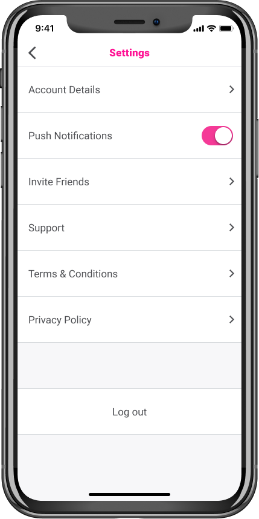
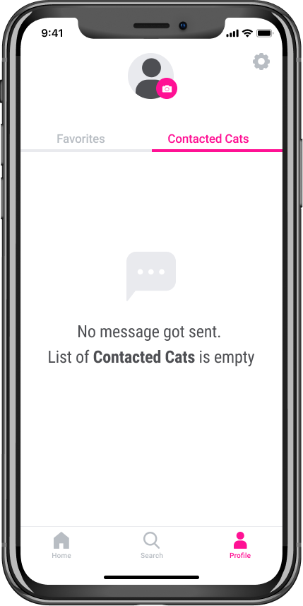

Striped Horses
A social network app for moms of children with undiagnosed and rare diseases.

01 Intro
Through personal experience, I got drawn to create an application for the undiagnosed patients' population. After conducting user interviews and data analysis of research studies, the application changed from a friend finder app for undiagnosed adults to a community app for mothers of children with rare and undiagnosed diseases.
02 Problem
No label, no belonging to a tribe/community. --> Isolation, anxiety and depression
03 Understanding
(Change) We conducted user interviews with our target demographic of 18-35 year olds to get insights about their needs
User Interviews
We were fortunate to interview two former undiagnosed adults (now rare disease patients) and the following statements were the key takeaways
Research Highlights
..about Parents of Undiagnosed and Rare Disease Children..
56%
are unable to maintain friendships
69%
are experiencing high emotional stresss
71%
say they use online support group
58%
feel alone and isolated
93%
had to take time off from job
66%
of caregivers that use online support groups are women
The importance of online support
Maybe because of the time-intensive demands of caregiving and to battle feelings of isolation,
many women of rare disease children report using an online support group.
Here are a few statements those moms made when talking about the value of creating those social connections
not only to share information but to gain support and a sense of hope:
Personal Growth
“It has opened a window on my inner world”
Emotional Support
"We speak the same language that comes from the same kind of suffering"
"It was useful to be able to express certain angers, certain misunderstandings"
"There were beautiful moments of joy, moments in which I felt the desire to have fun, to have moments of serenity between us, normal moments, the desire to feel happy"
Informational Support
"We have practical indications on what we do, how we handle the subject of sterilization at home, for example"
"The experiences you have in the group become yours, like a small amount of experience"
"It didn't just happen to me; it also happened to others, and, in the end, L. (daughter) is better off than others"
03 Solution
The original idea was to create a friend finder & community app for the undiagnosed disease community
(undiagnosed adults and parents of undiagnosed children), with the friendship aspect as the main feature
and community second.
After conducting user interviews, it showed that the app does not solve a problem they want
to have solved. Their only thought they are having is finding the correct diagnosis to go back to their old life.
On the other hand, parents are much more likely to accept this as the new normal and are wanting to give their
children the best quality of life they can.
The research also pointed out that mothers are more affected by their kid's disease. They are the primary caregiver,
and the women's life changes more than the fathers. Moms are the ones that want to or are already using some online
support groups and desire to connect with fellow mothers that are in the same situation.
The research showed that
they come for support first and that making friends will happen naturally by bonding over shared experiences.
This is why we iterated our app and made the community feature our main feature. Also, we changed the target audience to mothers only.
We opened up our target audience and decided to include mothers of undiagnosed children also.
97% of rare diseases have no cure - they are in the same limbo as mothers of undiagnosed children.
Goals
Based on the research conducted, we narrowed down our focus on four key areas of interaction:
Create a safe place
Create an onboarding that ensures that only moms of undiagnosed and rare disease children are on the app
Share thoughts easy
Enable users to effortlessly ask questions and share advice to the community page
Quickly browse posts
Structure content in a way that encourages interaction and easy skimming
Form friendships
Encourage women to connect by suggesting users based on forum activity
Users

Sasha - The Information Seeker
“In the group, there are women with much more experience than me who can help me.”

Jennifer - The Tribe Seeker
“When you talk, you know you’re understood.”
Design Process
(Change)We didn’t just jump from A to B. We researched, organized our hierarchy, created a visual language, iterated through a multitude of designs, and prototyped interactions
Sitemap and User Flows
Creating outlines for each scenario while establishing an organized hierarchy was essential to understanding how a user will reach each desired feature.

Sketching
By sketching and annotating, we quickly explored multiple layouts for the foundations of content flow before committing more resources to designs that were inferior to the overall experience.
Wireframes
These blueprints allowed us to solidify our designs into prototypes for testing to validate our solutions, leading to a better final product.
Design
Our visual direction resonates with mothers by invoking tones that represent motherhood, love, and warmth. Did I mention that this shade of magenta is the same as my mother's lipstick? Below is a style guide we used to stay consistent across all our visual design language:
Wireframe Sketches & User Testing Round 01
To establish necessary features, I created a list of user stories based on potential user tasks. The user stories were refined and prioritized to define a minimum viable product.

Onboarding
The feedback I got pointed out that the writing style comes across distant and not inviting. Also, it got mentioned that there is quite a lot to read.
Conclusion:
- Make the intro and questions shorter and write it friendlier
- Use mellow cat instead of couch buddy
- Implement sliders
As a new user, I want to save a cat profile
The participants seemed unsure if the heart icon is what they have to press. Even after they pushed it, they didn’t know if it got saved or not.
Conclusion:
- Doing an onboarding flow for first-time users
- After pressing the icon a message will appear that the profile got saved to Favorites
- Switching out the heart with a bookmark icon
As a new user, I want to schedule a meet and greet
One of the participants suggested renaming the 'Ask about Birdie' button. He was looking for a 'Meet and Greet' button and thought it's confusing to have it called 'Ask about Birdie'.
Conclusion:
- Change button to 'Meet Me'
As a returning user, I want to go to my saved list of cats
The word 'Discover' seemed confusing for the users, and it appears that this word is not suited for the home screen.
Conclusion:
- Change the word 'Discover' to 'Home'
- Add the 'Profile' icon to the onboarding flow to avoid confusion
As a returning user, I want to edit my preferences
Some participants thought that the preferences are under the profile.
Conclusion:
- Creating an onboarding flow which shows users where the preferences can be modified
Hi-Fi Wireframes
I took the feedback of my testing and created the wireframes in Figma. I made a clickable prototype and moved then on to the hi-fi mockups. While creating the UI, I decided to go back to the wireframes and to change the HOME screen.
Reasoning: The problem I try to solve with my application is to give cats that are less photogenic a chance of getting adopted. That's why I wanted to focus on their personalities and unique quirks. But when I was working on the hi-fi mockups, I realized that I only show the pictures and names of the adoptable cats on the HOME screen.
To get information about their personalities, you have to click on their profiles first. But does that not again benefit cats with better appearances? That's why I decided to rethink my wireframes and change it to show the cat's unique quirks on the HOME screen instead.

Concept and Branding
I named the app 'More Than Fluffy' because people tend to choose which cat to adopt depending on their looks. With my application, I want to focus on their personalities and show that cats are more than just cute and fluffy.
The app name is bold and flashy, and that's why it also needs a vibrant and flashy color to support the feeling and message of the app.
Why I chose hot pink for the call to action color: The color pink is the color of universal love of oneself and others. Pink represents friendship, affection, harmony, inner peace, and approachability. And hot pink is also used to communicate playfulness.
Hi-Fi Mockups
Our goal was to have the user's eyes get drawn immediately to the cat profiles. For that to happen, we worked with light, and neutral colors, and the only pop is the call to action color, which is a flashy hot pink.
User Testing Round 02
For the second round of user testing, I also did three preference tests which helped me to solidify my design choices. The data I collected from the second round of usability testing was useful and helped to make a more seamless and intuitive experience for the user.
Before

After

Onboarding
- The participant changed her mind about an answer, and he wanted to go back to choose a different option, but he wasn't able to.
- The participant pointed out that the ‘Tell us about yourself’ and ‘Let’s talk about your desired cat’ screens are unnecessary.
- The jumps of the progress bar seem not big enough. The participant is expecting the bar to change after every screen.
Conclusion:
- Implement a ‘Go Back’ button
- Incorporate the titles into the screens instead of having them as separate pages
- Change the progress bar from filling up after every segment to after every screen
Before

After

Match Filters
- The participant asked why there is a slider for ‘mellow/active’ section and why for the other sections you have to open another page at first before you can modify the filters.
- What if the user decides to move away?
Conclusion:
- Allow users to change the majority of the filters on the same screen
- Give the option to change the location
Preference Testing
86%
14%
83%
17%

83%
17%
05 What's next
User Testing...